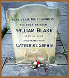

William
Blake nasceu em Londres no dia 28 de novembro, no ano de 1757.
Filho de comerciante, desde a infância ajudava na loja de
seu pai e entregava-se à leitura e ao desenho nas horas
vagas. Lia Paracelso, Jakob Boheme, Swedenborg e outros. Nesta
época, o jovem Blake já dava sinais do imenso potencial
artístico que desenvolveria no decorrer de sua vida.
William
Blake nasceu em Londres no dia 28 de novembro, no ano de 1757.
Filho de comerciante, desde a infância ajudava na loja de
seu pai e entregava-se à leitura e ao desenho nas horas
vagas. Lia Paracelso, Jakob Boheme, Swedenborg e outros. Nesta
época, o jovem Blake já dava sinais do imenso potencial
artístico que desenvolveria no decorrer de sua vida.
O jovem Blake recebeu influência intelectual
de seu irmão mais velho Robert, que morreu aos vinte anos
vitimado pela tuberculose. Nesta época, dizia ter visto
a alma de seu irmão ascendendo ao céu. Aos dez anos
de idade, afirmava ver e se comunicar com anjos. A crença
no mundo espiritual iria acompanhá-lo por toda vida e influir
diretamente no misticismo de sua obra.
Pouco tempo depois, foi matriculado na "Royal
Academy of Arts", onde aprendeu os estilos convencionais
de gravura. Aos catorze anos tornou-se aprendiz de James Basire;
função que exerceu por sete anos. Aos dezesseis,
passou a se dedicar intensamente no estudo e reprodução
gráfica das catedrais londrinas; especialmente a Abadia
de Westminster, cujo estilo gótico fascinou o jovem artista.
Ainda desenvolveu uma técnica própria de gravação,
denominada Illuminated Printing; onde utilizava-se uma
mesma matriz de cobre para desenhar e imprimir o texto de seus
poemas.
Aos vinte e cinco anos, casou-se com Catherine
Boucher; analfabeta e filha de jardineiro. Este matrimônio
não rendeu filhos ao casal. Mas Blake ensinou sua esposa
a ler, escrever e a ajudá-lo nas impressões das
gravuras. A partir de 1784, publicou largamente suas obras até
cerca de 1803. Neste período, caracterizou-se a parcela
mais importante de toda sua produção literária.
Alguns títulos como The Book of Thel, seguido
de The French Revolution (1791), e The Marriage of
Heaven and Hell (1793), denotam o apogeu de sua criação.
Este último é considerado a obra em prosa mais significativa
de sua vida, cujo título deriva de Swedenborg e contém
a Doutrina dos contrários; onde o autor em tom
profético e misterioso, afirma: "sem contrários
não há progresso". Em Visions of the
Daughters of Albion (1793), Blake expressa mais uma opinião
polêmica para seu tempo. Nesta obra, o autor afirma que
os prazeres sexuais são sagrados e através destes,
se alcança um novo estágio de pureza: a inocência.
Em
1794, Blake passou a interagir com mais intensidade seus grandes
talentos: a poesia e a pintura. Assim, The Gates of Paradise,
Song of Experience and of Innocence representavam uma
fase distinta de sua criação; onde as ilustrações
e as palavras compunham uma obra única. Segundo o autor,
manifestam "lados contrários da alma humana".
Blake também prestava seu talento ilustrando obras de seus
amigos.
Por um certo tempo, o poeta sustentou-se exclusivamente
com os ganhos de suas publicações. Mas, vivia a
beira da pobreza. Os livros não tinham uma vendagem expressiva
e eram muito baratos. A partir de 1803, integrou uma sociedade
comercial de tipografia na Broad Street, 27. Lesado pelo sócio,
Blake atravessou o momento financeiro mais conturbado de sua vida.
O poeta só viria a se estabelecer novamente em 1809, quando
promoveu uma exposição das próprias obras.
Mas não houve o retorno esperado.
O período entre 1810 e 1817, é considerado
um momento obscuro em sua vida; onde Blake passa a ilustrar catálogos
de fábrica de porcelanas. Em 1824, aos 67 anos de idade,
iniciou as ilustrações para Inferno, da
Divina Comédia (Dante). Sua dedicação
foi tanta que até mesmo estudou o idioma italiano para
compreender profundamente as idéias de Dante, chegando
a produzir mais de cem ilustrações. No ano seguinte
fez mais de vinte gravuras para Book of Job, uma de suas
obras artísticas mais célebres.
A fase final de Blake é essencialmente mística.
Seus poemas de atmosfera épica-proféticas como The
Four Zoas, Milton, The Everlasting Gospel
e Jerusalém, são complexas mitologias poéticas
onde anuncia a redenção humana em uma "nova
Jerusalém". Neste período, Blake já
era visto como louco; mas ainda compôs obras líricas
e herméticas como o Auguries of Innocence. Os
versos iniciais deste trabalho sintetizam a grandeza de seu pensamento:
To see a World in a Grain of Sand / and a Heaven in a Wild
Flower (Ver um mundo num grão de areia / e o céu
numa flor silvestre).
Embora religioso, Blake rejeitava a moral da época
e a Igreja institucionalizada. Ainda desenvolveu uma linguagem
própria e é um dos responsáveis diretos pelo
ressurgimento do romantismo
inglês. Não é possível dissociar o
poeta e o pintor, já que sua obra é uma composição
única, onde suas atividades artísticas somadas à
intelectualidade contestadora, compõem um universo pessoal.
Talvez por esse motivo, a grandeza de William Blake não
foi compreendida por seus contemporâneos e ainda hoje, não
é vista com o devido merecimento.
William Blake faleceu em Londres,
em 12 de agosto de 1827; deixando incompleto um ciclo de gravuras
que ilustrariam a Divina Comédia, de Dante. A
grande maioria das chapas de cobre gravadas por Blake, foi destruída
por Catherine, atendendo ao pedido do marido. Catherine morreu
quatro anos depois.
Por Spectrum
Obras
Disponíveis:
Poemas